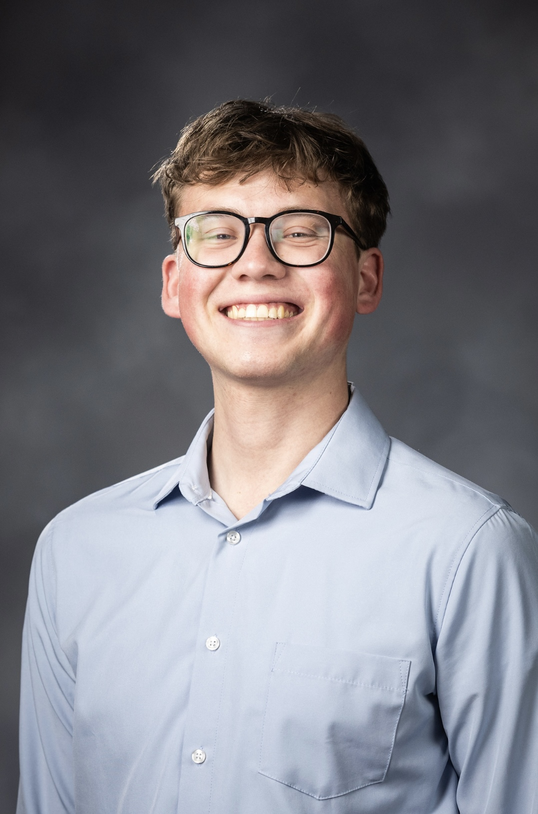

I believe sports are a microcosm of the human condition. They are where achievement, sacrifice, leadership, adversity, teamwork, and legacy intersect. Every athlete, organization, and fan has a story worth telling. My goal is to help organizations, athletes, and brands communicate those stories in ways that inspire, connect, and create impact.
Connect With Me LinkedInSports have always represented more than wins and losses to me. They reveal character, resilience, leadership, and the pursuit of excellence. Whether it's an athlete overcoming adversity, a team building a lasting culture, or a community rallying behind a shared identity, sports provide some of the most compelling stories in the world.
As a Public Relations student at Brigham Young University, I am developing the strategic communication, research, leadership, and relationship-building skills necessary to help organizations tell those stories effectively. My experiences in campaign strategy, audience research, leadership development, language instruction, and international service have taught me how to connect with diverse audiences and communicate with purpose.
My long-term goal is to build a career in sports communications, public relations, media relations, athlete representation, or organizational communications where I can help shape narratives that inspire fans, strengthen brands, and elevate the people behind the game.
Experience developing messaging, conducting audience research, analyzing data, and creating communication strategies through national-level campaign work.
Led and trained teams across multiple environments, including supervising more than 170 individuals and coordinating large-scale initiatives serving thousands.
Collected and analyzed hundreds of survey responses and qualitative interviews to uncover audience insights and strengthen communication campaigns.
Proven ability to connect with people from diverse backgrounds, cultures, and perspectives through communication, mentorship, and collaborative leadership.
Fluent in Czech and Slovak with extensive international leadership experience throughout Central Europe.
Lifelong competitor and sports enthusiast with deep appreciation for the stories, traditions, and culture that make sports meaningful.
Conducted large-scale audience research, analyzed 600+ survey responses, performed in-depth interviews, and developed strategic recommendations for a national client campaign while coordinating a six-member team.
Led communications efforts for a 55-member cohort, increased active membership, and helped drive engagement and event participation through strategic outreach.
Supported faculty research initiatives through data collection, analysis, and AI-related research, helping improve research efficiency and explore emerging communication technologies.
Trained and supervised more than 170 individuals, organized large-scale community service initiatives, and developed leadership skills through cross-cultural communication and team development.
Teach language and communication skills through personalized coaching, curriculum development, and immersive learning experiences.
"Sports are where achievement, legacy, hard work, and human potential converge. The stories behind those moments are what inspire me."